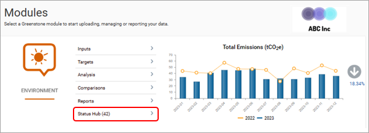
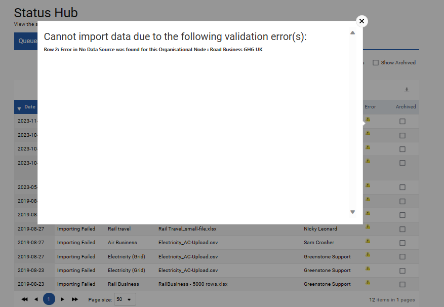
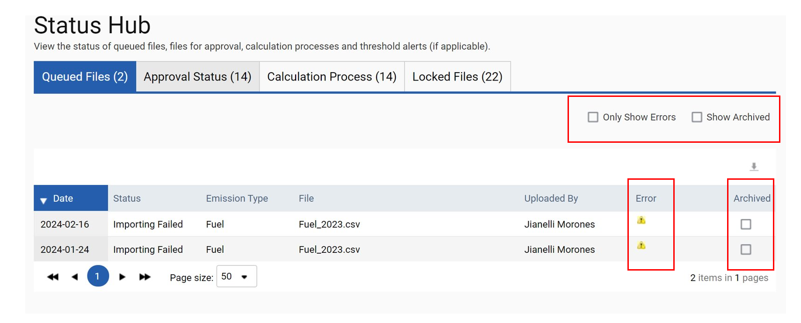
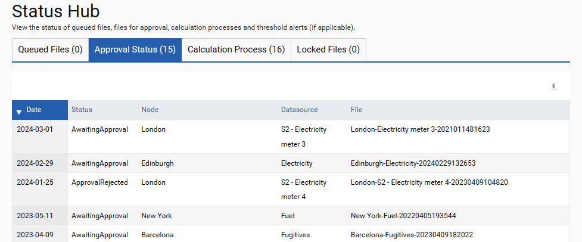
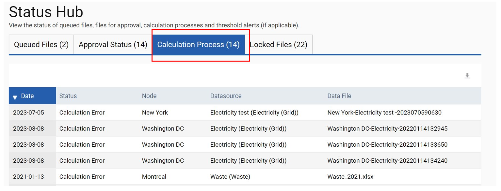
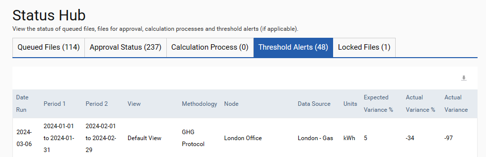

The Status Hub is available from the home page as shown in the red outline in the screenshot below. This hub displays all Queued Files, Approval Status, Calculation Process, Locked Files and Threshold Alerts.

Queued Files:
When files are queued and awaiting import they will be listed here with the status of ‘Awaiting Import’. The system checks for files to process every 10 minutes, but the queueing allows for better user visibility of the status of files and potential errors. Once a file has imported successfully it will no longer be displayed here. However if the uploaded file has any validation errors that have prevented it from being uploaded then this file will remain here with a yellow error icon as shown below.
Click on the yellow error icon to display the complete error message and to diagnose the issue with your upload. Upload errors can be caused by attempting to upload to nodes or data sources that do not exist.

Once you have corrected any errors in your data template and uploaded the file again, it is recommended that you Archive this file error by checking the ‘Archived’ tick box (see blue outline) This will ensure there is no confusion at a later date as to whether this file has been corrected and uploaded successfully or not.
If at any stage you would like to see the files that have been archived then checking the ‘Show Archived’ box (red outline) will display all files that have been archived. If the ‘Only Show Errors’ tick box (red outline) is checked then only those files with errors that have not been archived will display. This would mean that any file awaiting import would not be displayed.

Approval Status:
This section displays all files that are currently awaiting approval or have been rejected. It is recommended that files that have been rejected are either corrected so that they can be set for approval again or deleted. Please remember that for files that are awaiting approval or have been rejected the data has not been processed and is thus not included in any analysis or reports.

Calculation Process:
If any uploaded files have calculation errors these will be displayed in this section of Status Hub. Common reasons for these errors are where the consumption / distance has been left blank or units have been omitted. Please remember to check this area to see if any of the files you have uploaded have errors. If files do have errors, please correct these directly in the file or correct the original file and upload it again. If the errors have been corrected by uploading the file again it is recommended that the original file with the errors should be deleted as otherwise some of this data could be double counted.

Threshold Alerts:
This section provides an overview of all nodes and data sources that exceed set user-defined thresholds. This table can be exported to Excel for easy analysis.
